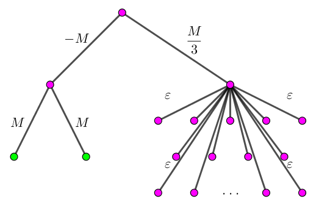
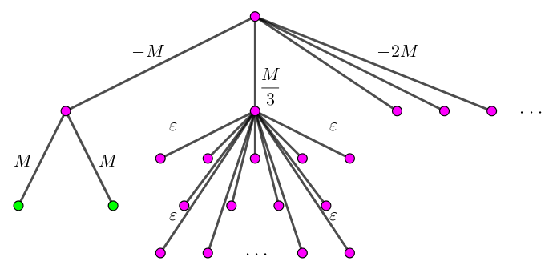
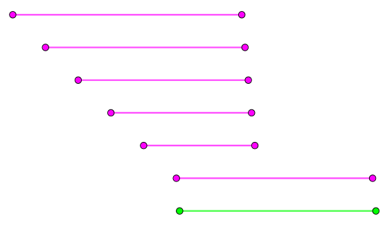
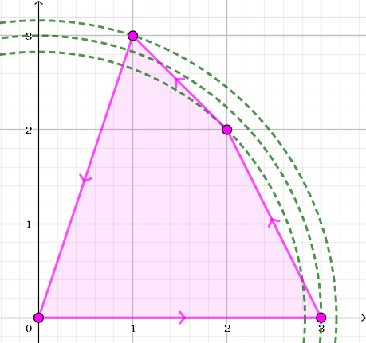

这是一道提交答案题。
给定 $8$ 道试题和 $8$ 份 (不完美的) 代码，你需要构造 $8$ 组输入数据来 Hack 掉这些写代码。
具体地，你需要使它们无法在规定的时间内得出正确的解。
Task 1：Hack "A + B Problem"。
然鹅 ADD() 函数会在 (二进制下) $a, b$ 某一位和为 $1$，下一位和为 $2$ 的时候出错。比如 ADD(1, 3) = 2。
因此我们只需构造 $a, b$ 使得 $a \oplus b$ 和 $2 \left( a \mathbin{\&} b \right)$ 满足这个条件即可。
不难发现，取 $a = 3, b = 5$ 等即可。当然如果你爆搜也能很快搜出来。
Task 2：Hack [互测2018]北校门外的未来。
注意到它会在 "谷图" 中边数超过 $10^5$ 时使用 $O \left( \dfrac {n^2} \omega \right)$ 的暴力。确切地说，应该是 $O \left( \dfrac {n \cdot ans} \omega \right)$ ($ans$ 即为最短路长度)。
于是，我们只需要将 $ans$ 变得很大即可。
考虑如下构造：
$V = \left\{ 1, 2, 3, \cdots, 2 n \right\}, E = \left\{ \left( i, i + 1 \right) \mid 1 \leq i < n \right\} \cup \left\{ \left( n, i \right) \mid n < i \leq 2 n \right\}$。
则 $T = \left( V, E \right)$ 是一棵树，且 $G \left( T \right)$ 中的边分为两类：
一类是链 $1 - 2 - 3 - \cdots - n$，另一类是 $n, n + 1, \cdots, 2 n$ 构成的完全图。即 $E' = \left\{ \left( i, i + 1 \right) \mid 1 \leq i < n \right\} \cup \left\{ \left( u, v \right) \mid n \leq u < v \leq 2 n \right\}$。
容易验证 $\left| E' \right| = O \left( n^2 \right)$，且 $1$ 与 $n$ 的最短路为 $n - 1。
取 $n = 2500$，然后不断询问 $\left( 1, n \right)$ 即可将其卡 TLE。
Task 3：Hack [CTSC2018]暴力写挂。
怎么又是基于迭代的乱搞！
这种东西往往钦定答案是唯一的，且很难被 "增广" 到差不多就完事了。
先加强条件，不妨假设树 $T'$ 是零权树 (即任意两点间距离为 $0$)。
于是问题化为求两个点到根的链并的最大值。
设 $M$ 是一个充分大的数 (如 $2 \times 10^9$)，$\varepsilon$ 是一个比较小但 $> 0$ 的数 (如 $1 \sim 10$ 之间) 则按照下图一样构造即可卡掉 (绿色的点是最优点，链并为 $M$)：
不过注意它的代码中有这么一段：优先取深度小的点进行 "增广"。
sort(id + 1, id + n + 1, cmp1);
for (i = 1; i <= min(10, n); i++) fix(id[i]);
sort(id + 1, id + n + 1, cmp2);
for (i = 1; i <= min(10, n); i++) fix(id[i]);
没关系，多挂几个虚点即可：
Task 4：Hack 单调队列优化 DP。
不难发现，DP 方程为 $$ f_i = \max_{\max \left\{ i - m, 0 \right\} \leq j < i} \left( f_j + \max_{j < k \leq i} a_i \right) $$
代码中使用了单调队列优化 $a_i$。不过细心观察一下，可以发现，代码中有这样一句话：
for (; i - q[head] > m; head++)
if (Head <= Tail && Q[Head].second == q[head]) Head++;
这导致算出来的是 $\max\limits_{i - m \leq k \leq i} a_i$ 而不是 $\max\limits_{i - m < k \leq i} a_i$。
因此而我们只需令 $a_{i-m}$ 特别大，简单分析一下可知，当 $n = 6, m = 3, a = \left[ 2, 2, M, 9, 2, 8 \right]$ 时，答案为 $M + 9$，错误程序输出为 $M + 10$。
Task 5：Hack "最大化线段交乘线段并" 问题。
一个显然的性质是，最优解的 $k = 2$。
由于所有线段的交非空，于是它们的并连续。
假设 $k > 2$，设最终线段的并的左右端点分别由线段 $s_1, s_2$ 贡献，则只取 $s_1, s_2$ 显然不劣于原解。
代码那么长，我们一步步分析它在干嘛。
第一步：
sort(a + 1, a + n + 1);
b[++m] = a[1];
for (i = 2; i <= n; i++) {
if (a[i].r > b[m].r)
b[++m] = a[i];
else
ans = max(ans, calc(b[m], a[i]));
}
先将互相包含的线段更新后扔掉。这个贪心显然是正确的。
第二步：
for (i = 1; i <= 1000000; i++) {
u = rand() % m + 1, v = rand() % m + 1;
if (u != v) ans = max(ans, calc(b[u], b[v]));
}
随机选几对 $u, v$ 进行更新。反正你又不是欧皇，答案唯一的你就更新不到了 所以只需要保证 $n$ 较大且答案唯一即可 Hack 掉。
第三步：
for (i = 2; i <= m; i++) {
l = 1, r = i - 1, lmid = (2 * l + r) / 3, rmid = (l + 2 * r) / 3, ret = 0;
while (r - l > 3) {
ll w1 = calc(b[lmid], b[i]), w2 = calc(b[rmid], b[i]);
if (w1 > w2)
ret = max(ret, w1), r = (3 * r + l) >> 2;
else
ret = max(ret, w2), l = (3 * l + r) >> 2;
lmid = (2 * l + r) / 3, rmid = (l + 2 * r) / 3;
}
for (j = l; j <= r; j++) ret = max(ret, calc(b[i], b[j]));
z[i] = ret;
ans = max(ans, ret);
}
假装排序过后 $ans \left( i, j \right)$ ($1 \leq i < j$) 是关于 $i$ 单峰的，对每个 $j$ 三分出这个最大的 $i$，并求出 "最大值" $z_j$。
于是只需要简单构造使其不单峰即可：
如图，绿色线段与前面 $6$ 条线段的贡献从大到小依次是 $6, 1, 2, 3, 4, 5$ (从上往下数)。
于是，使用这种构造，就无法更新到最优解了 (最优解显然是最下面两条线段)。
最后一步：
for (i = 1; i <= m; i++) id[i] = i;
nth_element(id + 1, id + min(m, 50), id + m + 1, cmp);
for (i = 1; i <= m && clock() * 1.0 / CLOCKS_PER_SEC < 0.48; i++) {
for (j = 1; j <= m; j++)
if (j != id[i]) {
ans = max(ans, calc(b[id[i]], b[j]));
}
}
按照第三步所得 $z_i$ 从大到小依次枚举每条线段，计算它对答案的贡献。
设最优解为 $\left( u, v \right)$，我们希望 $z_u, z_v$ 并不是最大的，最好是比较小的。
而事实上，在算法正确的情况下，$z_u, z_v$ 的值一定是最大的。然而，由于 $z_u, z_v$ 是 "假单峰" 算法搞出来的，因此我们可以搞得它 "名不副实"。
还是参照上图，对于底下的那条绿色线段，它本来的 $z$ 应该是和第 $6$ 条线段 (即它上面那条) 一起计算的，而由于假单峰，它会和最上面的那条一起计算。
于是这个 $z$ 就很 fake 了。设最优解的乘积为 $M$，我们可以构造大量长度为 $M - \epsilon$ 的线段，放到远处 (左处)，这样一来，前面线段的 $z$ 基本都是 $\sqrt {M - \epsilon}$，从而 $z$ 最大的线段基本都跑到前面去了。
故最后一步的答案也只会更新到 $M - \epsilon$，而不会更新到最优解 $M$。
呼~ 终于把这个点 Hack 完啦。
Task 6：Hack "最远点对" 问题。
容易想到该问题应该使用旋转卡壳 (xuán zhuǎn qiǎ ké)，但旋转卡壳真的是这么写的吗？
通常的旋转卡壳都是找一对切线像筷子一样夹起来，而这份代码居然以距离作为关键字去比较！
虽然最远点的单调性是正确的，但是谁告诉你距离函数在凸多边形上是单峰的？
于是容易 Hack。
Task 7：Hack "Chtholly 树" 维护数列。
啊？卡 Chtholly 树？不放区间赋值随便卡吧？
Task 8：Hack Euclid 最小瓶颈路。
众所周知，最小瓶颈路的过程比较简单 (比最短路简单多了)：
建出该图的任意一棵最小生成树，然后任意两点间的最小瓶颈路的权值，等于它们在生成树上的路径中边权的最大值。
证明：是 Kruskal 算法的直接推论之一。
可以发现，在生成树求出之后，这份代码是没有任何问题的。因此问题只能出在求 Euclid 最小生成树上。
因此我们只需要让该连的边连不上就好了。
观察代码……什么？朝两个坐标轴投影后贪心选点？
那我在 $x$ 轴，$y$ 轴上扔一大堆点后，再放一个 $\left( -1, -1 \right)$ 和 $\left( 1, 1 \right)$ 它不就连不上了么？
的确，这样就可以 Hack 掉了。不过要注意的坐标范围 $\geq 0$，于是需要一个简单的坐标平移。
3 5
n = 2500
print(2 * n, 3 * n - 1)
for i in range(1, n): print(1, i, i + 1)
for i in range(n, 2 * n): print(1, n, i + 1)
for i in range(n): print(2, i + 1, n)
from random import *
M, L = 2000000000, 2017011328
n, A, B, C = 100000, 23333, 66666, 98765
print(n)
print(1, 2, M // 10)
for i in range(3, n + 1):
if i == A: print(1, A, -M)
elif i == B: print(A, B, M)
elif i == C: print(A, C, M)
elif i <= 254: print(1, i, -L)
else: print(2, i, i * i % 10 + 1)
for i in range(n): print(i, i + 1, 0)
6 3 2 2 100 9 2 8
M = 10 ** 9
n, m = 20000, 18
print(n + m + 2)
L = [(M // 2, M - 1), (M // 2 + 1, M)]
for i in range(n): L.append((i + 1, i + 2400000 + 1))
for i in range(m): L.append((M // 2 - 1000000 * (m - i), M // 2 + 10000 + i))
L.sort()
for l, r in L: print(l, r)
4 0 0 3 0 2 2 1 3
from random import *
seed(20030731)
n = 20000
print(n, n // 2)
L = list(range(n))
shuffle(L)
for i in range(n // 2):
u, v = L[2 * i] + 1, L[2 * i + 1] + 1
print(1, min(u, v), max(u, v), 1)
n = 10000
print(n * 2 + 2)
print(0, 0)
print(2, 2)
for i in range(n):
print(1, i + 10)
print(i + 10, 1)
print(1)
print(1, 2)